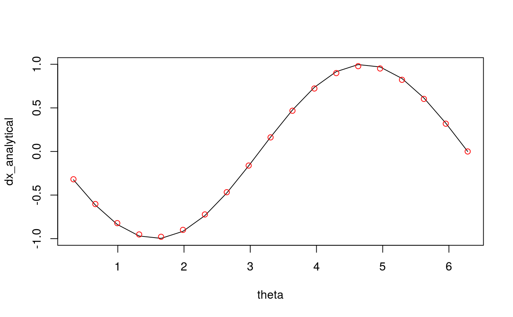
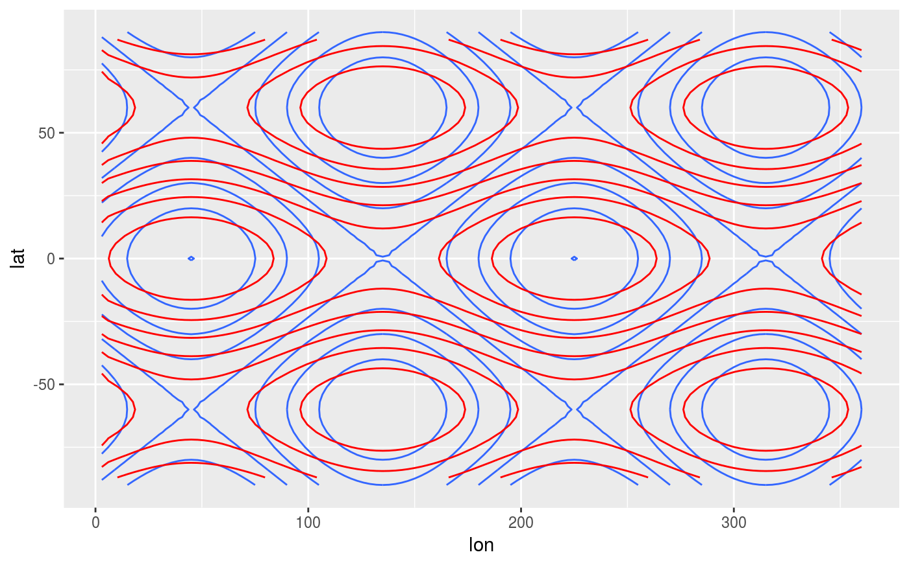

Derivate a discrete variable using finite differences
Derivate(formula, data = NULL, order = c(1, 2), bc = "none", sphere = FALSE, a = 6731)
| formula | a formula indicating dependent and independent variables |
|---|---|
| data | optional data.frame containing the variables |
| order | order of the derivative |
| bc | boundary conditions for each independent variable |
| sphere | logical indicating whether to use spherical coordinates (see details) |
| a | radius or the Earth in kilometers for use in spherical coordinates |
If there is one independent variable, a numeric vector of the same length as the dependent variable. If there is two or more independent variables, a list containing the directional derivatives of the dependent variable.
Each element of the return vector is an estimation of \(dx/dy\) (or
\(d^2x/dy^2\) if order = 2) by centerd finite differences. The first and
last elements will be NAs unless cyclical boundary conditions are set
in bc.
If sphere is TRUE, then the first two independent variables are
assumed to be longitude and latitude (in that order) in degrees. Then, a
correction is applied to the derivative so that they are in units of distance.
Other meteorology functions: DerivatePhysical,
EOF, FitQsWave,
WaveFlux
theta <- seq(0, 360, length.out = 20)*pi/180 theta <- theta[-1] x <- cos(theta) dx_analytical <- -sin(theta) dx_finitediff <- Derivate(x ~ theta, bc = "cyclic") plot(theta, dx_analytical, type = "l")points(theta, dx_finitediff, col = "red")# Curvature (Laplacian) # Note the different boundary conditions for each variable variable <- expand.grid(lon = seq(0, 360, by = 3)[-1], lat = seq(-90, 90, by = 3)) variable$z <- with(variable, cos(lat*pi/180*3) + sin(lon*pi/180*2)) variable <- cbind(variable, as.data.frame(Derivate(z ~ lon + lat, data = variable, bc = c("cyclic", "none"), order = 2))) library(ggplot2) ggplot(variable, aes(lon, lat)) + geom_contour(aes(z = z)) + geom_contour(aes(z = z.ddlon + z.ddlat), color = "red")#> Warning: Removed 240 rows containing non-finite values (stat_contour).